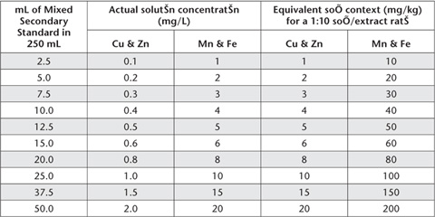

This dilute hydrochloric acid method (0.1 M HCl) is suited to use on acidic soils used to grow sugar cane in northern Australia. The basic method was developed by Tucker and Kurtz (1955) and Nelson et al. (1959) and subsequently modified and calibrated to assess Zn deficient soils in coastal Queensland used to grow sugar cane (Reghenzani 1990). As for Method 12A1, it is convenient to analyse each extract for Cu, Zn, Mn and Fe. Dilute HCl is also used as a trace metal extractant on cropping lands, such as in corn-producing areas of the USA (Mokma et al. 1979).
The method uses air-dry soil at a 1:10 soil/solution ratio and an extraction time of 1.0 h, with measurement by ICPAES or AAS.
0.1 M HCl Extracting Solution
For each 1.0 L of extracting solution, dilute accurately the equivalent of 10.0 mL analytical grade 10 M hydrochloric acid (HCl) to 1.0 L with deionised water. Mix well before use.
Primary Standards (Cu, Zn, Mn, Fe)
Prepare each as for Method 12A1. 1.0 mL of each of these contains 1.0 mg of Cu and Zn and 5.0 mg of Mn and Fe.
Mixed Secondary Standard
Take 10.0 mL each of Cu and Zn Primary Standards and 20.0 mL each of Mn and Fe Primary Standards into a small volume of 0.1 M HCl Extracting Solution, mix well and make to 1.0 L in a volumetric flask with 0.1 M HCl Extracting Solution. This solution contains 10 mg/L of both Cu and Zn and 100 mg/L of both Mn and Fe.
Mixed Working Standards
Take aliquots of freshly prepared Mixed Secondary Standard as detailed in Table 12.5 and make each accurately to 250 mL with 0.1 M HCl Extracting Solution. Actual solution concentrations and equivalent soil contents for a 1:10 soil/extract ratio are also given in Table 12.5.
A method blank with no soil should be included with each batch of samples.
Weigh 8.0 g of air-dry soil of <2 mm into clean 200 ml extracting bottles/flasks, add 80 mL 0.1 M HCl Extracting Solution, stopper, and as quickly as possible transfer to an end-over-end shaker and extract for exactly 1.0 h. Next filter (Whatman No. 4 paper) or centrifuge the extracts without delay, discarding the first portion, and retain the cleared extracts for analysis. Measure metal concentrations in these filtrates by ICPAES or AAS as soon as possible.
Use an appropriate selection of Working Standards and determine concentrations of each element (mg/kg) from the appropriate calibration curve (or regression equation), after adjusting for any significant reagent blank. It is important to follow manufacturer’s recommendations with respect to instrument parameters and wavelength selections. Likely wavelengths for ICPAES analysis are Cu = 327.395 nm; Zn = 213.857 nm; Fe = 259.940 nm; and Mn = 257.610 nm. Refer to Table 12.4 for typical instrument parameters for analysis by AAS, should this be the only analytical option available.
Table 12.5. Volumes of Mixed Secondary Standard and consequential concentrations of Mixed Working Standards for 0.1 M HCl-extractable Cu, Zn, Mn and Fe.

Report 0.1 M HCl-extractable Cu, Zn, Mn and Fe (mg/kg element) on an air-dry basis.
Table 12.4. Typical instrument parameters for analysis of DTPA soil extracts by AAS.